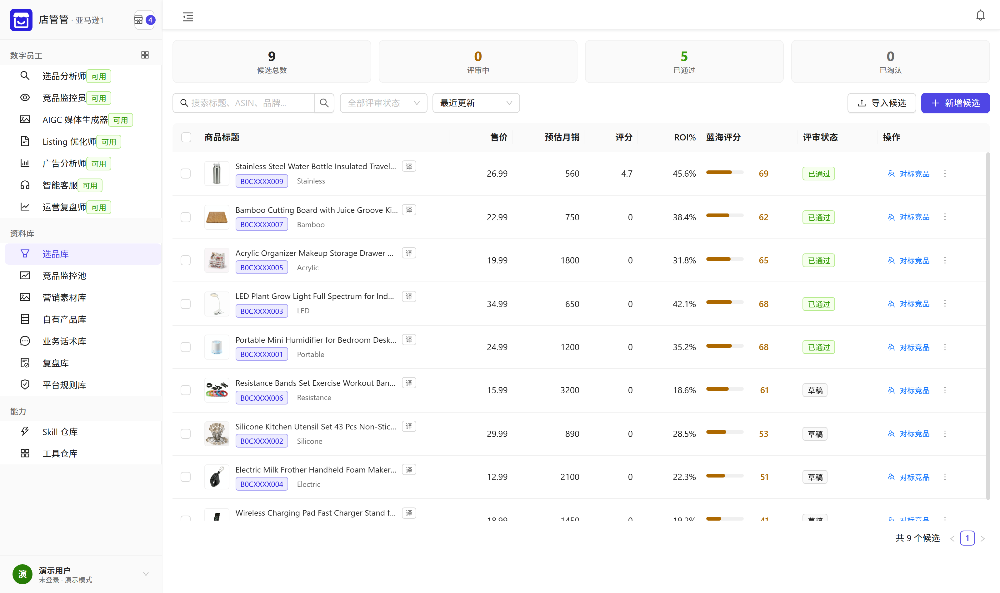
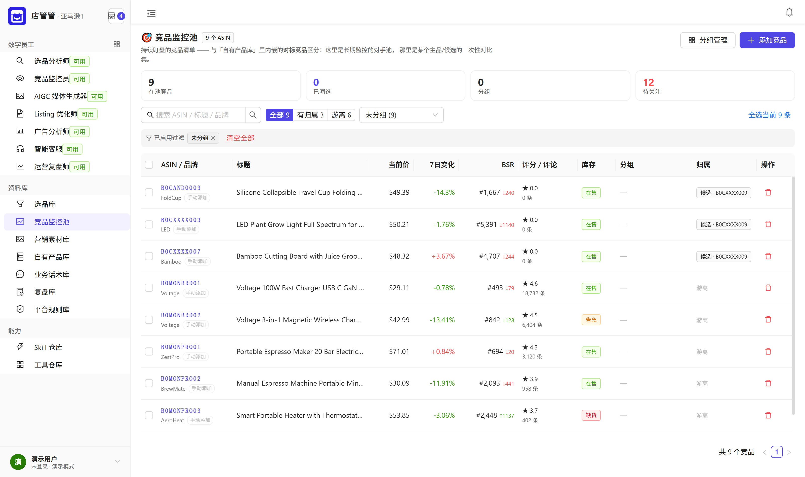
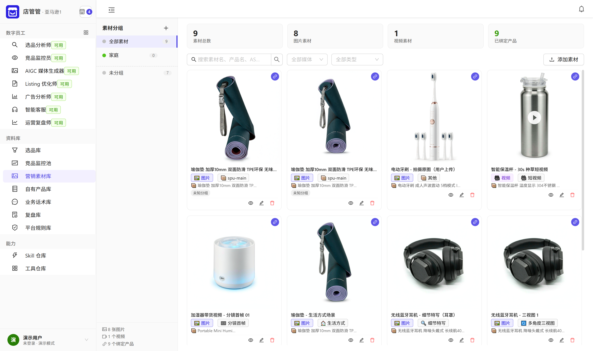
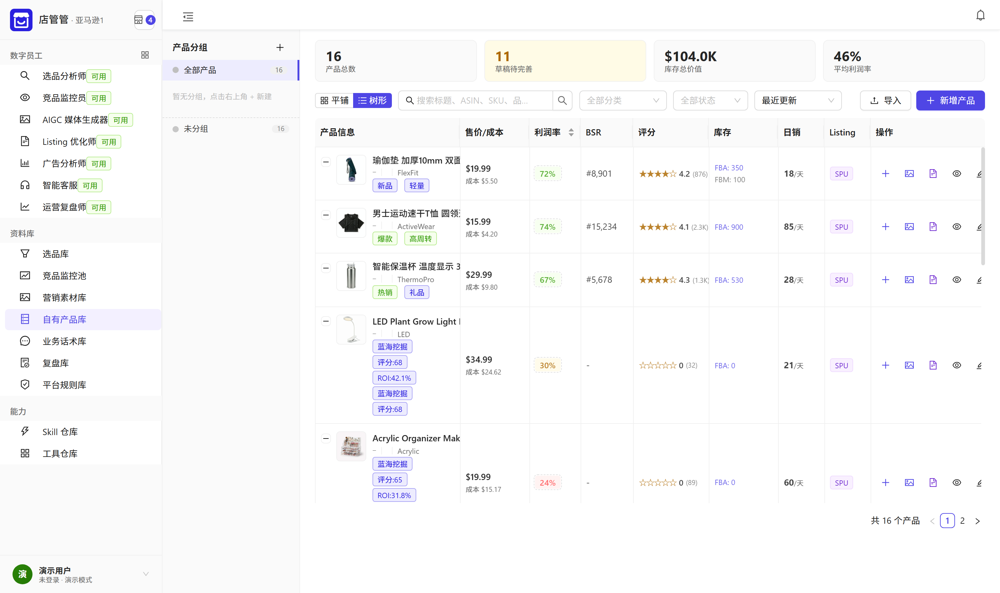
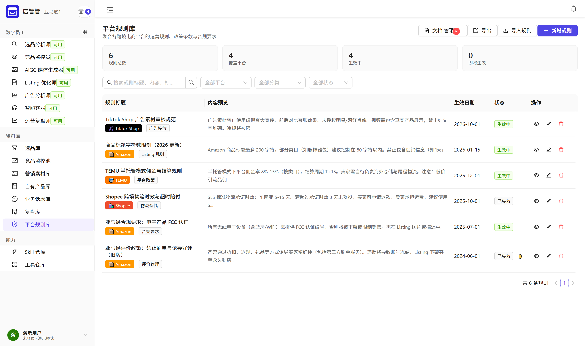
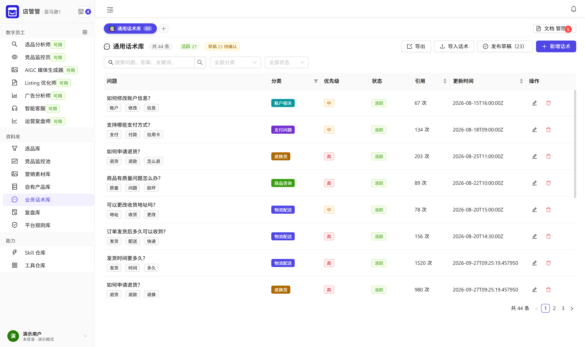
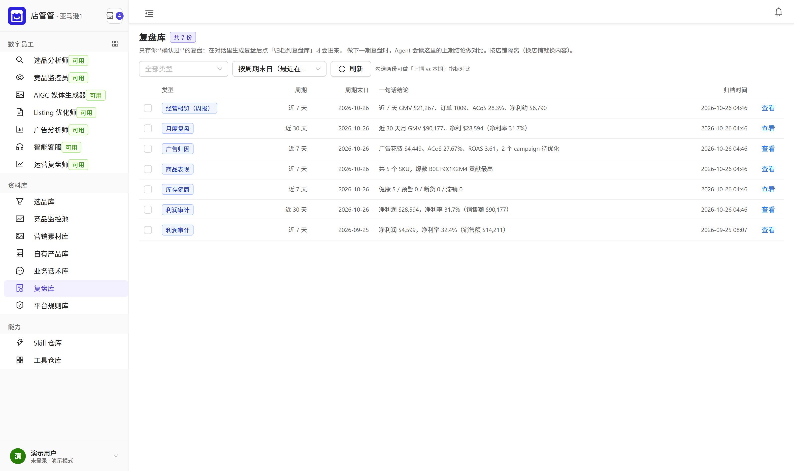

跨境电商运营 · 已接通 Amazon SP-API
把跨境运营的每一步，
交给一支 AI 团队
从选品、竞品监控、素材生产、Listing 优化、广告分析、智能客服， 到经营复盘 —— 七个数字员工各管一段，判断依据都沉淀在同一个空间里， 而不是散在几个表格与聊天记录里； 一段经营跑完，它会自己收成一份带结论的复盘报告。
纯 Web，不需要安装任何客户端；店铺凭据加密保存，业务数据按空间隔离。

从选品开始
每一步判断，
都该留下依据
我们做什么，以及刻意不做什么
跨境运营的工具已经很多了。我们把边界划在 「判断与执行之间的那一段」，其余交给已经做得很好的系统。
不做 ERP、不做进销存。采购、库存台账、财务对账、物流轨迹 —— 你继续用现有的系统，我们不与之竞争。
不做"捷径"。凡是把风险留给你的店铺、收益却归工具的那一类做法， 我们不参与 —— 工具的价值在于把日常经营做得更透， 不在于替你承担平台规则上的风险。
不承诺出单与排名。任何经营结果取决于你的商品、定价、 供应链与平台规则，不是任何工具能保证的。我们只在页面上写 我们真的能交付的东西。
把「一次运营动作」变成「一条可复用的依据」
缺的往往不是某个单点工具，而是判断依据散落在各处： 选品时看的数据、竞品调价的时间点、上架时踩过的规则、 客服反复回答的问题 —— 算完就丢，下次重来。 我们做的就是把这条链跑通，并让每一步的数据留在同一个空间里。
想先拿一个店铺跑一遍这条链？
申请开通试用一支 AI 团队
七个岗位，
各管一段
现在打开就能用的，是哪些？
下面是当前版本已经可用的数字员工，不是路线图。 没有做完的能力我们不会写在官网上 —— 配图也全部来自产品的真实界面。
店秘书
全局入口。一句话直达对应的数字员工，或直接打开资料库里的某一本 —— 不必先想"这个需求该找谁"。
选品分析师
蓝海挖掘、利润计算、竞品分析。品类大盘与候选品一起看， 把"这个品能不能做"拆成可以逐条核对的依据。
竞品监控员
价格追踪、上新监控、舆情分析。盯住对手的调价、库存与差评动向， 把"今天该关注什么"直接推到眼前。
AIGC 媒体生成器
AI 商品绘图、主图诊断、短视频脚本与分镜。 产出的素材按商品归档，下次不必从头再做一遍。
Listing 优化师
标题、五点、描述、关键词的生成与优化， 并把平台规则与字符数限制一并考虑进去。
广告分析师
广告诊断、词报告、出价优化。哪些词在烧钱、哪些该加价， 用数据说话而不是凭感觉。
智能客服
FAQ 问答、订单追踪、工单管理。常见问题沉淀成话术库， 反复被问到的问题不必每次重新写。
运营复盘师
周报与月度复盘、广告归因、商品表现、库存健康、利润审计。 把一段时间的经营结果收成一份可以往下走的结论。
先开一个账号，把七个数字员工各点一遍，比看演示准。
申请开通试用同一份数据
判断、动作、结果，
落在同一个空间
决定留下什么，才算真的帮上忙
工具的差别不在"能不能生成一段文案"，而在用过的判断能不能被复用。 下面每一屏都对应产品里真实存在的一本"账"。
数据接入现状：店铺授权与取数已全链路接通的是 Amazon SP-API； Shopee / Shopify 可完成连接验证（凭据加密保存），数据接口接入中； TikTok Shop / TEMU 尚未接入。本页截图均为演示环境数据。
候选品不是一张表，是一组可以对照的依据
每个候选品带着售价、预估月销、评分、ROI 与蓝海评分。 评审状态（草稿 / 已通过 / 已淘汰）一路跟着走 —— 下次再看这个品，不必重新论证一遍。
- 量化对比：同一批候选品横向排开，谁更值得做一眼看得出。
- 状态可追溯：通过还是淘汰，是有人做过判断的，不是默认值。
- 与竞品池同一份数据：这里的竞品不是另录一遍，就是从监控池来的。
对手动一下，你在今天就知道
竞品池盯的是变化：谁降价了、谁断货了、谁的 BSR 在往上爬。 每一次变动都带方向和幅度，不是一份要自己对比的静态清单。
- 价格与波动：当前价加上一段窗口内的涨跌幅。
- BSR 与评论数：排名变化带趋势，评论数一起看才不会被单指标误导。
- 库存与分组：在售 / 缺货直接标出，可按分组批量盯。





一次复盘归档一条，下一期拿它当基准
复盘不止是一份报告，更是一条带日期的记录：类型、周期、期末日、 一句话结论。同一天重复归档不会堆两份（按店铺 + 类型 + 周期 + 期末日只留一条）； 下一期开工时，Agent 拿这期的结论做对比，而不是从零开始回忆。
- 六类报告：周报、月度复盘、广告归因、商品表现、库存健康、利润审计 —— 都是把已有数据算出来的，不是让模型写一段话。
- 一句话结论：归档时就写清这期赚了多少、卡在哪一步。
- 可导出：指标与明细能整表导出，交给财务或客户对账。

想看一份完整的演示空间数据？
联系我们索取我们的边界
不承诺出单，
只把依据说清楚
谁来用，各看什么？
一个空间里可以同时有多个成员 —— 各自看到的店铺与数据范围不同， 空间之间彼此隔离。
跨境卖家
自己看店：选品、上架、广告、客服一把抓， 需要一个地方把判断依据攒下来，而不是每次从零开始。
运营团队
多人分工：选品、广告、客服各管一段， 同一套店铺数据与话术库，不必来回传文件对齐口径。
代运营服务商
多店铺并行：按店铺切换上下文， 每个客户的监控池、素材与规则库各自独立，互不串味。
先开一个空间，把自己的店铺接进来试一遍。
申请开通试用联系我们
试用开通、合作与咨询都走下面这些方式。我们会在工作时间内回复。
- 主体名称【待填：营业执照上的名称】
- 联系电话【待填】
- 电子邮箱【待填】
- 微信 / 企业微信【待填】
- 办公地址【待填】
关于试用
目前开通账号由我们人工确认，目的是把试用环境与你自己的店铺空间 对应起来，避免试用数据与正式数据混在一起。请通过左列的方式联系我们， 并简单说明店铺所在的平台与规模，以及想先试用的部分。